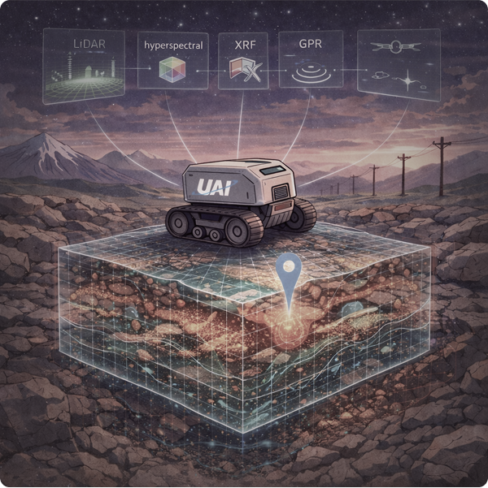
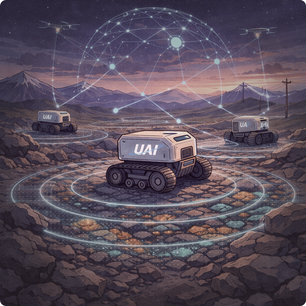

Autonomous robots for mineral exploration.
Multi-modal sensing platforms that collapse the longest, most expensive stage of the mining pipeline — field exploration.
Multi-modal sensing platforms that collapse the longest, most expensive stage of the mining pipeline — field exploration.
Trusted by leaders in mining, defence & space


The Problem
The mining industry spends billions annually on field exploration — sending geologists into remote, hazardous terrain for months. The process hasn't fundamentally changed in decades. It's slow, dangerous, expensive, and produces sparse data that leads to poor decisions.
Four integrated modules that take you from satellite imagery to subsurface intelligence — fully autonomous, with 150× the data density of manual surveys.

Satellite and aerial imagery analysis to identify high-potential exploration targets before boots hit the ground.

LiDAR, hyperspectral, XRF, and ground-penetrating radar fused into a single autonomous sensing platform.

Autonomous traversability analysis and path planning that navigates complex terrain without human intervention.

Real-time 3D reconstruction of terrain and subsurface geology — a living model that updates with every pass.
Deployments
Not simulations. Real robots in real terrain.

Underground exploration in hazardous environment
CA, North America
Swarm capabilities in action in extreme weather
CA, North America
Terrain exploration and geospatial discovery
BLR, India
The Impact
Reduction in human exposure to hazardous exploration environments
Faster terrain characterization compared to traditional manual survey methods
More data points collected per expedition than conventional geological surveys
The Team

M.S. Space Robotics. Former ISRO. Building autonomous systems that redefine how humanity explores the Earth's subsurface.

PhD Field Robotics. NASA JPL CoSTAR team. DARPA Subterranean Challenge veteran. Led autonomy systems for some of the hardest exploration problems on Earth.
$300K in pilots across 3 continents. $150K won at Future Minerals Forum, Riyadh. Backed by Antler. Incubated at ARTPARK, IISc.
Get in Touch